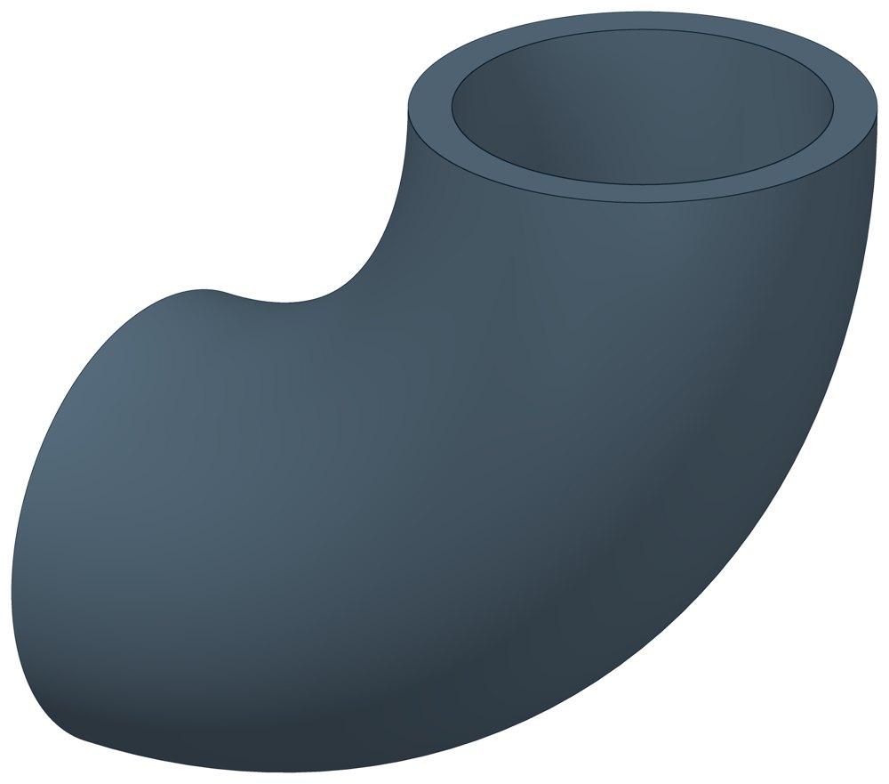

Отвод нержавеющий 90°
Отвод 90° под приварку из нержавеющей стали 12Х18Н10Т.

- Диаметр трубы Dн
- 21,3–219 мм
- Исполнений
- 2
- Масса
- 0,04–25 кг
- Цена в магазине
- 109–15 481 ₽
- 3D-модели
- у всех исполнений
Применение и монтаж
Назначение: где применяется
Трубопроводы из нержавеющей стали. Размеры в таблице даны как у отводов по ГОСТ 17375-2001; на нержавеющую сталь этот стандарт не распространяется, документ на изделие уточняйте при заказе.
D — наружный диаметр, T — толщина стенки, F — расстояние от торца до центра гиба, R — радиус гиба по оси.
Таблица исполнений
| Обозначение | Код ПРОМБУРГ | Dмм | Tмм | DN | Fмм | Rмм | Цена₽ | Массакг | Артикул | Магазин | 3D |
|---|---|---|---|---|---|---|---|---|---|---|---|
| 21,3×2* | ПБ-ОТВН-0021-1 | 21,3 | 2 | 15 | 28 | 28 | 109 | 0,04 | TEN2032 | Купить | 3D |
| 219×10* | ПБ-ОТВН-0219-1 | 219 | 10 | 200 | 300 | 300 | 15 481 | 25 | TEN2066 | Купить | 3D |
* Примечания к исполнениям:
- 21,3×2, 219×10 — Размеры как у отвода по ГОСТ 17375-2001; на нержавеющую сталь этот стандарт не распространяется
Цена — из магазина promburg.ru на дату редакции каталога 12.10.2026, ₽ за штуку; актуальную цену и наличие уточняйте при заказе.
Чтобы заказать, сообщите обозначение и код ПРОМБУРГ: +7 (499) 325-51-35, promburg@yandex.ru.
Нормативные документы
На трубу Dн 21,3–219 мм в каталоге
Позиции каталога с исполнениями на те же наружные диаметры трубы.
Опоры и подвески
- Опора неподвижная хомутовая ТС-659 общих Dн: 1
- Опора неподвижная двухупорная ТС-660 общих Dн: 1
- Опора неподвижная четырёхупорная ТС-661 общих Dн: 1
- Опора неподвижная двухупорная усиленная ТС-663 общих Dн: 1
- Опора неподвижная щитовая ТС-666 общих Dн: 1
- Опора неподвижная боковая ТС-668 общих Dн: 1
- Опора неподвижная хомутовая бескорпусная ТС-669 общих Dн: 1
- Опора неподвижная хомутовая с корпусом ТС-670 общих Dн: 1
- Опора скользящая приварная ТС-624 общих Dн: 1
- Опора скользящая хомутовая ТС-626 общих Dн: 1
- Опора катковая двухъярусная ТС-628 общих Dн: 1
- Опоры сварных отводов ТС-631 общих Dн: 1
- Опорные плиты диэлектрические ТС-632 общих Dн: 1
- Опоры хомутовые подвижные 313 ТС общих Dн: 1
И ещё 69 типов — в оглавлении каталога.
Компенсаторы
- Компенсатор сильфонный DEK общих Dн: 2
- Компенсатор сильфонный для систем отопления общих Dн: 2
- Компенсатор сильфонный для отопления с кожухом КОК общих Dн: 2
- Компенсатор сильфонный КС общих Dн: 2
- Компенсатор сильфонный КСО общих Dн: 2
- Компенсатор сильфонный КСО-Д КСОД общих Dн: 2
- Компенсатор сильфонный антивибрационный газовый КСУ-Г КСУГ общих Dн: 2
- Компенсатор сильфонный сейсмический общих Dн: 2
- Компенсатор сильфонный 2ОПКР общих Dн: 1
- Компенсатор сильфонный 2ОПКР (ИЯНШ) 2ОПКРИ общих Dн: 1
- Компенсатор сильфонный 2СКУ.М 2СКУМ общих Dн: 1
- Компенсатор сильфонный 2СКУ.М (ИЯНШ) 2СКУМИ общих Dн: 1
- Компенсатор сильфонный 2СКУ.ППМ 2СКУППМ общих Dн: 1
- Компенсатор сильфонный 2СКУ.ППМ (ИЯНШ) 2СКУППМИ общих Dн: 1
И ещё 20 типов — в оглавлении каталога.
Другие детали
- Отвод стальной крутоизогнутый 90° общих Dн: 2
- Заглушка стальная эллиптическая общих Dн: 1
- Отвод стальной крутоизогнутый 90°, 09Г2С общих Dн: 1
- Переход стальной концентрический общих Dн: 1
- Тройник стальной равнопроходный общих Dн: 1
- Фланец стальной воротниковый общих Dн: 1
- Фланец стальной плоский приварной общих Dн: 1
Другие типы раздела
Детали трубопроводов (отводы, переходы, фланцы, заглушки, днища, тройники)
- Днище стальное эллиптическое
- Заглушка стальная эллиптическая
- Отвод стальной крутоизогнутый 90°, 09Г2С
- Отвод стальной крутоизогнутый 90°
- Переход стальной концентрический
- Тройник стальной равнопроходный
- Фланец стальной воротниковый
- Фланец стальной плоский приварной
- Фланцы прочие
Частые вопросы
Что указать в заявке, чтобы получить цену без уточнений?
Обозначение с номером исполнения или код ПБ, количество, Dн и стенку трубы, расчётную температуру наружного воздуха, покрытие, город доставки и желаемый срок. Кнопка «В заявку» в таблице собирает спецификацию, которую можно выгрузить в Excel или отправить письмом.
Какой радиус гиба у отводов?
Отводы каталога приведены по ГОСТ 17375-2001: радиус гиба около полутора условных проходов. Для отвода 108 мм (Ду 100) R = 150 мм, для 219 мм (Ду 200) — 300 мм. Отводы с радиусом около одного условного прохода — это другой стандарт, ГОСТ 30753-2001.
По какому стандарту нержавеющие отводы и тройники?
Размеры в таблице даны как у деталей по ГОСТ 17375-2001 и ГОСТ 17376-2001. На нержавеющую сталь 12Х18Н10Т эти стандарты не распространяются: документ на изделие уточняйте при заказе.
Есть ли отводы на 45°, 60° и 180°?
В таблицах каталога — отводы 90°. ГОСТ 17375-2001 предусматривает также 45° и 180°, а для отечественного ряда диаметров и 60°; такие позиции уточняйте при заказе.
Детали подбирают по Ду или по наружному диаметру?
Приварные детали — отводы, переходы, тройники, заглушки, днища — по наружному диаметру и толщине стенки трубы, запись вида 219×6. Фланцы — по условному проходу Ду и давлению Ру.